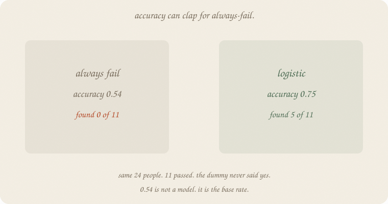
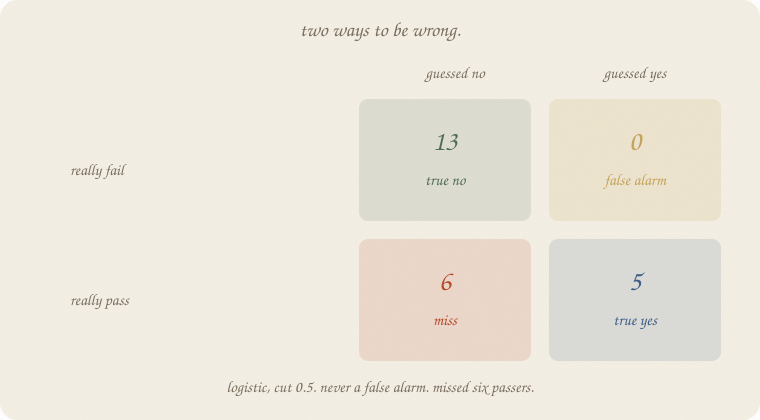
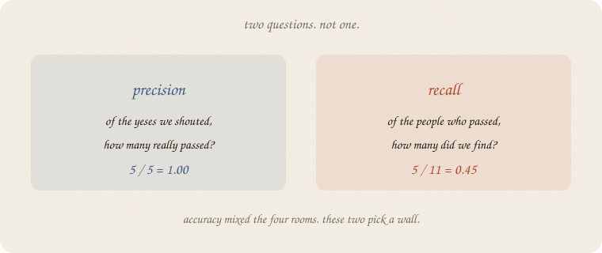
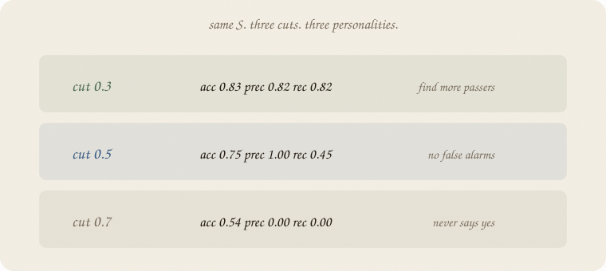
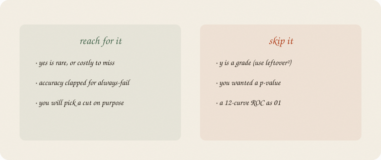

datazines · a sketchbook

Read 01 train test validate and 01 logistic regression first. Exam hours, house seed 7, eighty students — the pass/fail class, not ridge’s thirty graders. A harder exam than logistic 01, so yes is rarer. R² / leftover² still live on the grade shelf. Not a p-value (01 t-test). Not F1 / ROC as 01.
This is 03 of fundamentals. Short.
Flip it like a notebook. One page = one idea. Done.
Eight people, ŷ = 1.75 + 1 · hours. Leftover² mean 0.1875. RMSE 0.433. R² 0.936.
That is the metric for a number. Vertical miss, then a square, then a mean. Linear 01 already owns it. Pride if you score the same eight. A test if you hid people (01 train test validate).
Yes/no is a different y. You cannot RMSE a pass. You can count rooms.
Harder exam. Same hours, sleep, tutor. Pass is rarer: 26 / 80. Hide 24. Train 56 (15 passed). Test 24 (11 passed).
A dummy that always says fail:
| accuracy | 0.542 |
| found passers | 0 of 11 |
13 of 24 failed. Guess fail every time and you are right 13 times. 0.54 is the base rate, not a model.
Logistic, cut 0.5: accuracy 0.75. Better. Still: it only said yes five times. Six passers walked by.
Accuracy mixed four rooms into one number. The dummy hid in that mix.
Guess vs truth. Two ways to be wrong.

Logistic, cut 0.5, on the 24:
| guessed fail | guessed pass | |
|---|---|---|
| really fail | 13 true no | 0 false alarm |
| really pass | 6 miss | 5 true yes |
Never a false alarm. Missed six passers. Accuracy = (13 + 5) / 24 = 0.75. The six misses sat in the pile and barely dented it.
People call the table a confusion matrix. Four rooms. Name them in English first.

Precision — of the yeses we shouted, how many really passed?
5 / 5 = 1.00. Every “pass” was a pass. No false alarms.
Recall — of the people who passed, how many did we find?
5 / 11 = 0.45. Half the passers, a bit worse. Six misses.
Always-fail: precision 0, recall 0. Accuracy still 0.54.
Which wall matters is politics. Missing a passer (exam: they needed the tutor) vs a false alarm (you booked extra hours for someone who was fine). The 0.5 cut does not know your cost. You do.
Same S. Same 24. Three cuts.

| cut | accuracy | precision | recall | said yes |
|---|---|---|---|---|
| 0.3 | 0.83 | 0.82 | 0.82 | 11 |
| 0.5 | 0.75 | 1.00 | 0.45 | 5 |
| 0.7 | 0.54 | 0 | 0 | 0 |
0.7 is always-fail again. 0.3 finds more passers, pays two false alarms. 0.5 is the default, not sacred — logistic 01 already said that.
Do not pick the cut on the test pile. That is peeking (01 train test validate).
If you keep only one thing:
accuracy can clap for always-fail. precision / recall pick a wall.
Same levers as logistic. Harder intercept so pass is rarer (26 / 80). House seed 7. Split 70/30, random_state=0. Dummy vs logistic vs three cuts.
import numpy as np
from sklearn.dummy import DummyClassifier
from sklearn.linear_model import LogisticRegression
from sklearn.model_selection import train_test_split
from sklearn.metrics import (
accuracy_score, precision_score, recall_score, confusion_matrix,
)
rng = np.random.default_rng(7)
n = 80
hours = rng.uniform(1, 6, n)
sleep = rng.uniform(4, 9, n)
tutor = (rng.random(n) > 0.6).astype(float)
z = -4.8 + 1.05 * hours + 0.25 * (sleep - 6.5) + 0.7 * tutor
passed = (rng.random(n) < 1 / (1 + np.exp(-z))).astype(int)
print("passers", int(passed.sum()), "/", n, " rate", round(float(passed.mean()), 3))
Xtr, Xte, ytr, yte = train_test_split(
hours.reshape(-1, 1), passed, test_size=0.3, random_state=0
)
print("train", len(ytr), "pass", int(ytr.sum()), "rate", round(float(ytr.mean()), 3))
print("test ", len(yte), "pass", int(yte.sum()), "rate", round(float(yte.mean()), 3))
dummy = DummyClassifier(strategy="most_frequent").fit(Xtr, ytr)
log = LogisticRegression().fit(Xtr, ytr)
yp_d = dummy.predict(Xte)
yp = log.predict(Xte)
proba = log.predict_proba(Xte)[:, 1]
def show(title, yhat):
print(title)
print(" acc ", round(accuracy_score(yte, yhat), 3))
print(" prec", round(precision_score(yte, yhat, zero_division=0), 3))
print(" rec ", round(recall_score(yte, yhat, zero_division=0), 3))
print(" cm TN FP / FN TP", confusion_matrix(yte, yhat).ravel().tolist())
show("always fail (dummy)", yp_d)
show("logistic, cut 0.5", yp)
print("P(pass | 2h) =", round(log.predict_proba([[2]])[0, 1], 2))
print("P(pass | 5h) =", round(log.predict_proba([[5]])[0, 1], 2))
print("predicted yes at 0.5:", int(yp.sum()))
print("\ncuts on the same 24")
for t in (0.3, 0.5, 0.7):
yhat = (proba >= t).astype(int)
print(f" t={t} acc {accuracy_score(yte, yhat):.3f} "
f"prec {precision_score(yte, yhat, zero_division=0):.3f} "
f"rec {recall_score(yte, yhat, zero_division=0):.3f} "
f"yes {int(yhat.sum())}")
passers 26 / 80 rate 0.325
train 56 pass 15 rate 0.268
test 24 pass 11 rate 0.458
always fail (dummy)
acc 0.542
prec 0.0
rec 0.0
cm TN FP / FN TP [13, 0, 11, 0]
logistic, cut 0.5
acc 0.75
prec 1.0
rec 0.455
cm TN FP / FN TP [13, 0, 6, 5]
P(pass | 2h) = 0.11
P(pass | 5h) = 0.47
predicted yes at 0.5: 5
cuts on the same 24
t=0.3 acc 0.833 prec 0.818 rec 0.818 yes 11
t=0.5 acc 0.750 prec 1.000 rec 0.455 yes 5
t=0.7 acc 0.542 prec 0.000 rec 0.000 yes 0
Dummy accuracy 0.542 — the fail share of the 24. Precision 0, recall 0. Logistic at 0.5: accuracy 0.75, precision 1.00, recall 0.45. Five true yes, six misses, zero false alarms. Cut 0.3 finds 9 of 11 passers and pays two false alarms. Cut 0.7 is the dummy again.
Logistic 01 used a milder intercept (−3.2). Pass rate there was ~2/3, so accuracy 0.84 did not have to hide always-fail. This notebook needed a rarer yes so the clap would be obvious. Same levers. Harder exam. Not a second universe.
zero_division=0 is sklearn saying: you never shouted yes, so precision is 0, not a crash.
| word | meaning |
|---|---|
| leftover² / RMSE | miss on a number |
| accuracy | share of guesses that match |
| true yes / miss / false alarm / true no | the four rooms |
| precision | of shouted yeses, how many were real |
| recall | of real yeses, how many we found |
| dummy | always the majority (here: always fail) |
Also called (in a room):
| here | there |
|---|---|
| miss | false negative |
| false alarm | false positive |
| four rooms | confusion matrix |
| dummy | baseline |

Reach for it when yes is rare or costly to miss, accuracy clapped for always-fail, or you will pick a cut on purpose.
Skip it when y is a grade (use leftover² / R²); you wanted a p (01 t-test); you wanted a 12-curve ROC as 01.
Pays you: two questions instead of one clap. A dummy to beat. The cut as politics, not magic.
Costs you: two numbers, not one. A thin test pile (11 passers) rattles. F1 / ROC exist; they are sequels, not this file.
Fundamentals 03. Accuracy can clap for always-fail. Remaining rooms, short: SVM, Bayes 01, RL 01. Not a p-value.
Flip it like a notebook. One page = one idea.